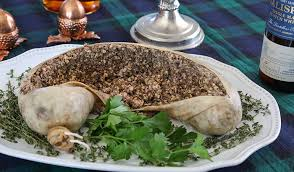

Haggis Recipe!
Doesn't it look yummy!

Materials needed
- 1 sheep's stomach, cleaned and thoroughly rinsed
- 1 sheep's heart
- 1 sheep's liver
- 250g (9 oz) beef or lamb suet, finely chopped
- 2 onions, finely chopped
- 225g (8 oz) oatmeal (preferably steel-cut)
- 1 teaspoon salt
- 1 teaspoon ground black pepper
- 1 teaspoon ground coriander
- 1 teaspoon nutmeg
- 1 teaspoon mace
- 1 teaspoon dried mixed herbs
- 400ml (14 fl oz) beef or lamb stock
cooking instructions
- Rinse the sheep's stomach thoroughly under cold water, then soak it in salted water overnight. Rinse again before using.
- In a large bowl, combine the chopped sheep's heart, liver, and suet.
- Add the finely chopped onions and oatmeal to the bowl.
- Season the mixture with salt, ground black pepper, coriander, nutmeg, mace, and dried mixed herbs. Mix well to combine.
- Stuff the mixture into the prepared sheep's stomach, filling it about two-thirds full. Be sure to leave room for expansion during cooking.
- Sew the opening of the stomach closed with a needle and thread, or use skewers to secure it.
- Place the stuffed stomach in a large pot and pour the beef or lamb stock over it.
- Cover the pot with a lid and bring the stock to a boil over medium heat. Once boiling, reduce the heat to low and simmer gently for about 3 hours, or until the haggis is cooked through and firm to the touch.
- Remove the haggis from the pot and allow it to cool slightly before serving.
- To serve, slice the haggis and serve it with neeps (mashed turnips) and tatties (mashed potatoes), traditionally accompanied by a whisky sauce.